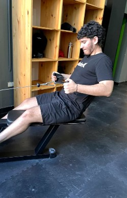
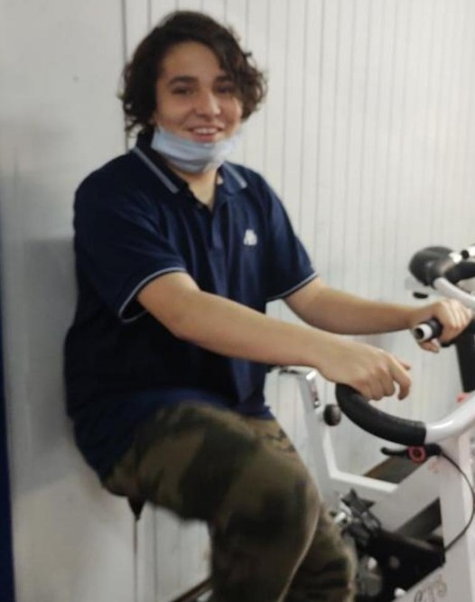
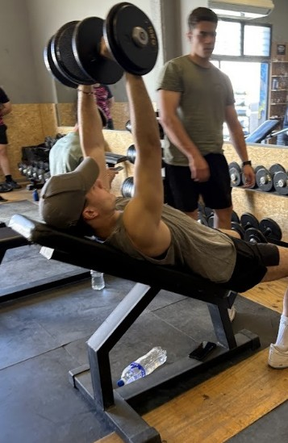
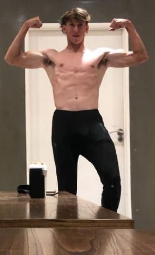

Lautaro Capdeville
Entrenador Personal
Lautaro es un entrenador personal certificado con más de 10 años de experiencia, su pasado en las canchas de villa mitre le dan un enfoque perfecto para deportistas.

Bautista Bartolini
Asesor nutricional y entrenador
Bautista es un ex socio del gimnasio el cual gracias a nosotros pudo cambiar su fisico y su vida, despues de años aprendiendo sobre nutricion combinado con entrenamientos pesados, se unio a nuestro equipo para ayudar a otros a lograr sus objetivos.

Santino Crivera
Musculacion
Santino aparte de su gran especializacion en el apartado de musculacion, es tambien muy sabio en el apartado deportista. Gracias a su paso por las infantiles de bahiense del norte y argentino, los entrenamientos con el son exigentes y de gran rendimiento.

Bautista Cutini
Asesor deportivo
Bautista cuenta con años de experiencia en deportes de alto rendimeinto pasando por chanchas de futbol, basquet, padel, etc. Su gran entendimiento con el deporte le permite ofrecer un entrenamiento personalizado para cada jugador.
Francesco Dicarli
Profesor de CossFit y Yoga grupal
Francesco siempre ha sido un gran defensor de la salud y el bienestar. Es conocido por su especializacion en las clases de CossFit y Yoga grupal femenina.